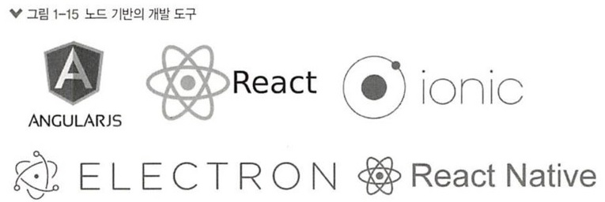

서버 외의 노드
- 서버 외의 노드
-
- 노드 사용 범위
-
처음에는 대부분 노드를 서버로 사용했지만, 노드는 자바스크립트 런타임이기 때문에 용도가 서버에만 한정된 것은 아닙니다.
노드는 자바스크립트 런타임이기 때문에 용도가 서버에만 한정된 것은 아닙니다.
사용 범위가 점점 늘어나 웹, 모바일, 데스크톱 애플리케이션 개발에도 사용되기 시작했습니다.
- 웹 프레임워크
-
노드 기반으로 돌아가는 대표적인 웹 프레임워크로는 Angular와 React, Vue, Meteor 등이 있습니다.
Angular는 구글 진영에서 프론트앤드 앱을 만들 때 주로 사용하고,
React는 페이스북 진영에서 주로 사용합니다.
모바일 개발 도구로는 React Native와 Ionic Framework를 많이 사용합니다.
페이스북, 인스타그램, 에어비앤비, 월마트 테슬라 등이 React Native 를 사용하여 모바일 앱을 운영 중입니다.
- 데스크탑 프로그램
-
데스크톱 개발 도구로는 Electron이 대표적입니다.
Electron으로 만들어진 프로그램으로는 Atom, Slack, Discord 등이 있습니다.
이 책에서 사용할 에디터인 비주얼 스튜디오 코드도 Electron으로 만들어졌습니다.
